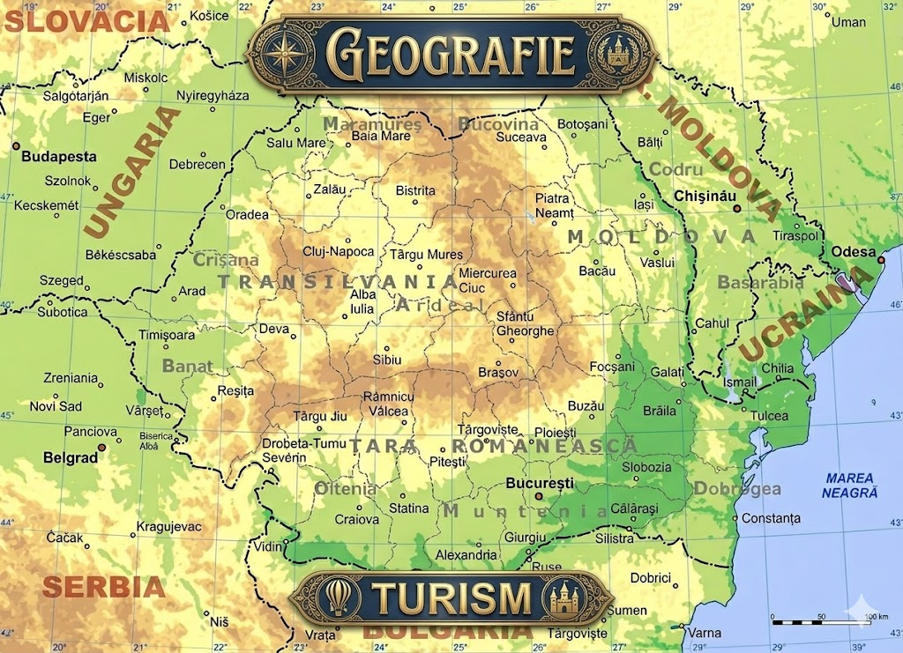

Despre România
România este un stat unitar situat în sud-estul Europei Centrale, la Marea Neagră, cunoscut geografic ca țară carpato-danubiano-pontică, cu capitala la București. Membră a UE și NATO, are o populație în scădere (aprox. 19 milioane, 2021) și o economie bazată pe diverse sectoare, cu o diversitate naturală remarcabilă, inclusiv Delta Dunării.
Repere Cheie despre România: Geografie: Are o suprafață de 238.397 km², fiind străbătută de Munții Carpați, Dunăre și având ieșire la Marea Neagră. Politică: Republică parlamentară, stat membru al Uniunii Europene din 2007 și NATO din 2004. Populație: Majoritatea populației este română (88,9%), cu o comunitate importantă de maghiari (6,1%) și romi. Economie: PIB-ul pe cap de locuitor este sub media UE, dar țara are o dezvoltare semnificativă în industria auto, IT și servicii. Religie: Majoritatea populației este creștin-ortodoxă (peste 73%). Istorie: Statul modern a apărut prin unirea Principatelor Moldovei și Țării Românești în 1859, sub Alexandru Ioan Cuza.Capitala și cel mai mare oraș al țării este București.
Sarcina suplimentară (din Lab 1)
